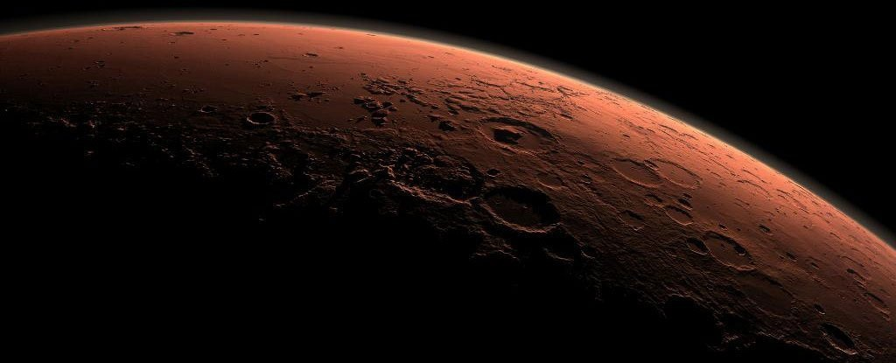

India's low-cost Mangalyaan spacecraft entered orbit around the Red Planet on Wednesday, September 24, after a 10-month-long journey.
The success of the mission represents a milestone in the country's space program.
"We have dared to reach out into the unknown and have achieved the near impossible," said Indian Prime Minister Narendra Modi at the Indian Space Research Organization's (ISRO) headquarters near Bangalore.
With this achievement, India joins a club of deep space explorers such as the United States, Russia and Europe, all of which have reached Mars.
The success is also a reason for national pride as India became the first single nation to reach the Red Planet and enter orbit at its first go.
More than half of all missions to the planet have failed, including China's in 2011 and Japan's in 2003.
Moreover, at a cost of 74 million USD, the mission cost is less than the estimated 100 million USD budget of the Hollywood blockbuster "Gravity" and represents just a fraction of NASA's MAVEN spacecraft, which began to successfully orbit the planet just a few days ago.